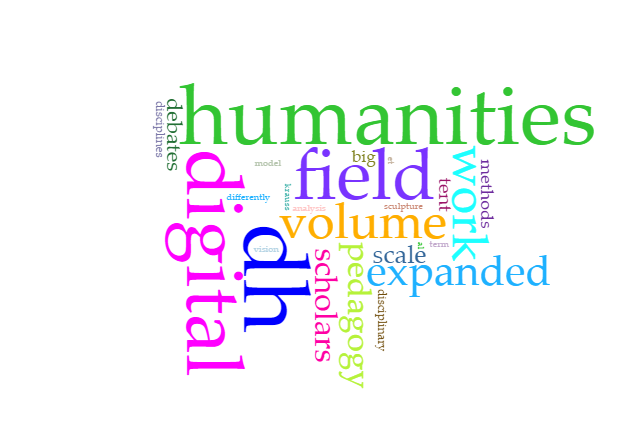
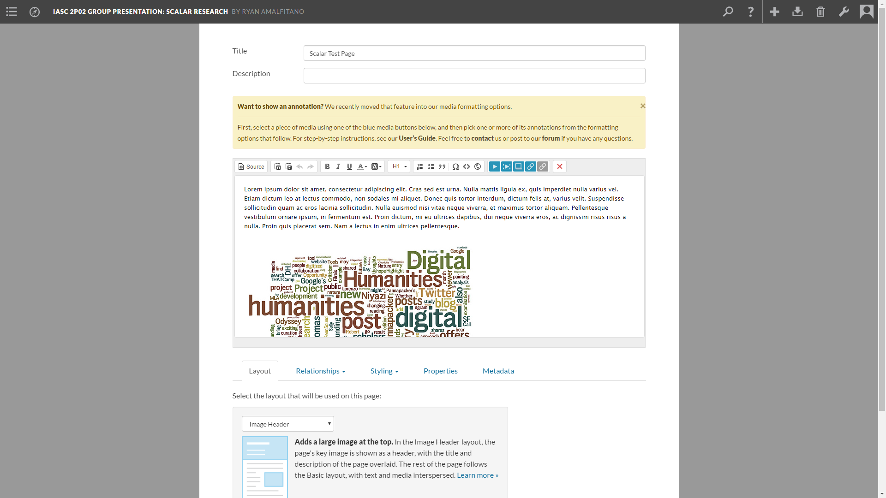
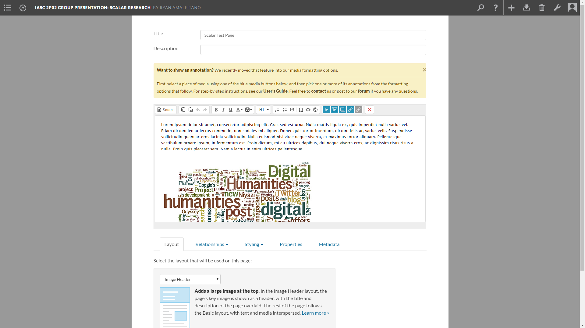

IASC 2P02 | Ryan Amalfitano
About Me
Hi, I'm Ryan Amalfitano, a current student at Brock University in St. Catharines, and I'm in my second year of the Interactive Arts and Sciences (IASC) program, which has strong links to the Digital Humanities (DH). The research specialization within DH that I find most interesting is text analysis and data visualization: a project within these fields that I would consider taking part in might be something like the Z-Axis Tool; some kind of text analysis and data visualization tool which can display and represent text analysis and research results in an interesting and coherent way. Some of my existing projects have already included results from text analyses and data visualizations, including my Academic Blog, in which I used the tool Voyant to find the most commonly used words in texts, which supported the argument I made within that project. In the future, I may take my work in other directions, such as perhaps combining text analysis and data visualization with geospatial analysis, to link specific words and terms to the corresponding geographical locations that they refer to or are linked to (again, like Z-Axis – where a story was taking place when a certain word was used), and include that within the visualization.
Academic Blog - Defining Digital Humanities

Abstract
Words?
Research Timeline
Words!
Academic BlogCollaborative Project
Project Description
My Collaborative Project (with John Mattis, Jonathan Brenders, and Nicole Boccia) was a team presentation focused on the Scalar online publishing tool. Our presentation covered the basics of Scalar, its uses, as well as its history. Our team introduced the class to the Alliance for Networking Visual Culture (or ANVC), the team responsible for creating Scalar. We also went over some of the similarities and differences between Scalar and other publishing tools, and showed a Scalar test page to the site to show off some of its capabilities. We found that Scalar had numerous tools, some familiar and some unique, which allowed for a great degree of freedom in the creation of digital content.
Collaboration Statement
Personally, my approach to collaborative scholarship is one of professionalism and efficiency. I tend to prefer assigning the project's components to team members based on each member's individual skills and expertise, and working together to solve problems or remove obstacles that block the team's continued progress. For example, within the Collaborative Project, our team split up the work based on each member's skills. As a web developer and expert with the WordPress digital content publishing tool (a similar tool to Scalar), I took on the role of researcher, and set up the Scalar test page, as well as evaluated some of its capabilities, as my previous skills and experience allowed me to do so most efficiently out of all of our team's members.
In my opinion, collaboration can enrich any project and any team, regardless of their objective. Collaboration between scholars allows them to share ideas and opinions, come to new conclusions, and present those conclusions with their combined experience and skill sets. As explained above, my own personal approach to collaborative scholarship focuses on professionalism and efficiency. My workflow within teams typically goes something like this: go over the project's objectives, discuss the team's own interpretation of the project and establish a direction, and divide up the work between members based on their skills and experience. Collaborative scholarship can help a team reach their goals via the combined expertise of all team members involved, and it is a defining factor in the success of any team-based or collaborative project.
Collaborative Project 
Here are some images of the work I did on the project. Above is a screenshot of one of my slides as well as two screenshots of the test page.

Here are some images of the work I did on the project. Above is a screenshot of one of my slides as well as two screenshots of the test page.
Research Presentation
Research Presentation